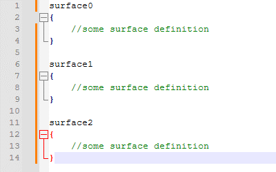

I updated a section of the guide Notepad++ tips to improve your ghost dev experience!
I've been working on updating a certain freeshell recently, and as part of that I've been doing a lot of column editing/multi-editing. And the one thing that's been really frustrating me is that when I have to make a complicated multi-selection, I'm a little clumsy with a mouse, and often click when I don't mean to... which leads to me frequently adding areas to my selection that I don't intend to. And when that happens, I would have to restart the selection over from the beginning to avoid messing up other code in my surfaces.txt, which is really frustrating when you're making selections with 15+ points.
Then, out of nowhere, I suddenly had the thought... it would be really nice if I could Ctrl click a caret I placed by accident, and have it be removed! ... Can I do that?

Yes. Yes you can.
Two years it took me to realize that.
All of a sudden, my one major frustration with multi-selection is gone, and I'm free to make beautiful things with it. And oh boy, am I! If you follow that link I shared above, you'll see various gifs I've already shared of column editing work I've done for a real shell, and I'll probably be putting up more gifs before it's done. It's wild how quickly and effectively I can make shells with this, and how much more I can add to shells without it feeling extremely cumbersome. The shell I'm working on now would have been completely out of the question before I learned to use these tools.
Change notes for the guide:
- Updated the information in the column editing section to be more accurate/complete.
- Added a note about how multi-selection carets can be removed without starting over.
- Added additional gifs to the multi-selection section, demonstrating how it can be used with the column editing window to insert numbers.
As a little aside: I haven't posted anything else this month, and I probably won't have anything else until May. I was hoping I might get a freeshell update out, but I've had a lot going on this month, and I'm also working hard on my entry for this year's Ghost Masquerade! Be on the lookout for that soon if you want to try and guess which ghost is mine ✨